DataTransformerRegistry.enable('default')Figure design
Principles of effective design
A good figure should:
- convey a clear message or story
- avoid excessive complexity
- look nice
- be well-labeled and appropriately sized
- stand alone with a short caption
. . .
Here we’ll mostly look at lots of examples.
On color
Color is one of the most frequently used aesthetics and is easy to misuse.
- choice of color scale should match the data
- use of color should take account of colorblindness
- color can only encode a limited amount of information
Color scales
There are three types of color scales.
- Qualitative scales are non-monotonic sets of colors.
- Sequential scales are monotonic sets of colors spanning a color gradient.
- Diverging scales are sequential scales centered at a neutral color.
Qualitative scales
Qualitative scales are non-monotonic sets of colors.
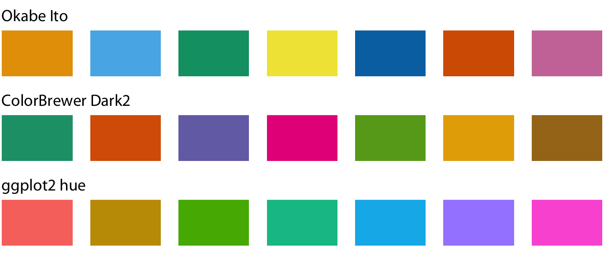
. . .
Useful for displaying categorical variables with few levels.
Sequential scales
Sequential scales are monotonic sets of colors spanning a color gradient.
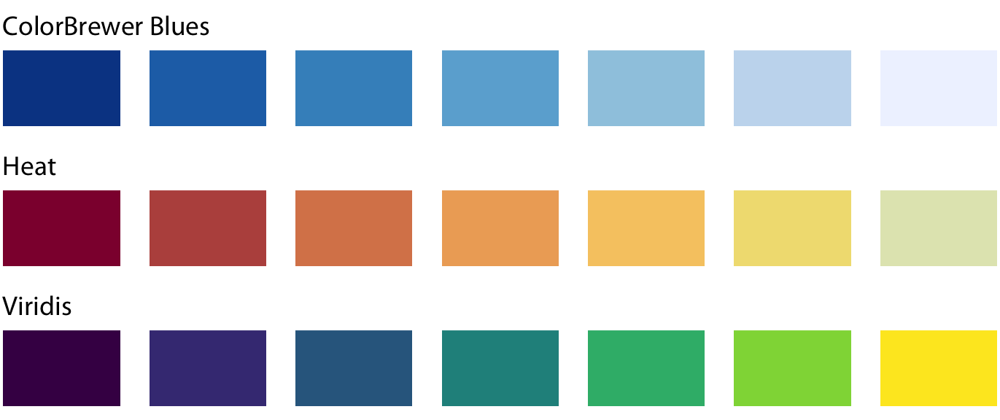
. . .
Useful for continuous variables.
Sequential scales
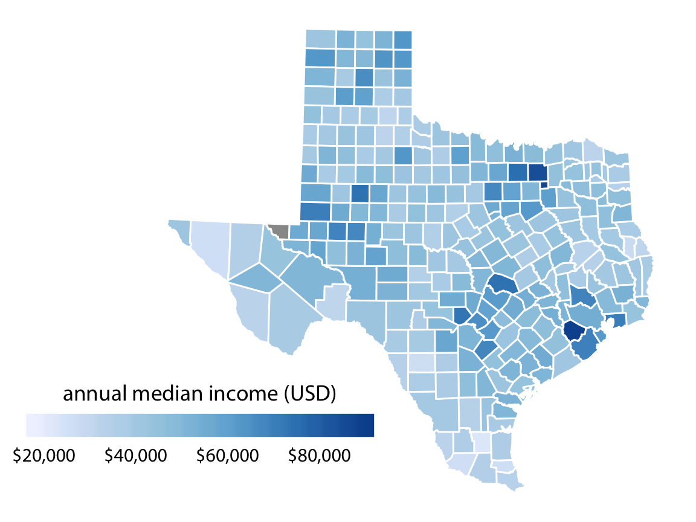
Diverging scales
Diverging scales are sequential scales centered at a neutral color.

. . .
Useful for continuous variables with a ‘natural’ center.
Diverging scales

Use of color
Common mistakes:
- Encoding too much information
- Poor choice of scale
- Not accounting for colorblindness
TMI

Better

. . .
Avoid encoding more than 5 categories using color
Inappropriate scales
The color scale doesn’t match the data well, since the rainbow scale emphasizes arbitrary data values. In addition, colors here are too intense.

Better
. . .
A diverging scale is appropriate here because 50% is a natural midpoint in context.
Color blindness
Color vision deficiency (CVD) or colorblindness refers to difficulty distinguishing specific colors.
- red-green CVD: protanomaly and deuteranomaly
- blue-yellow CVD: tritanomaly
CVD-friendly scales
Some color scales still retain visible contrast for different types of color vision deficiency (CVD).
Here is a simulation (for those without CVD).
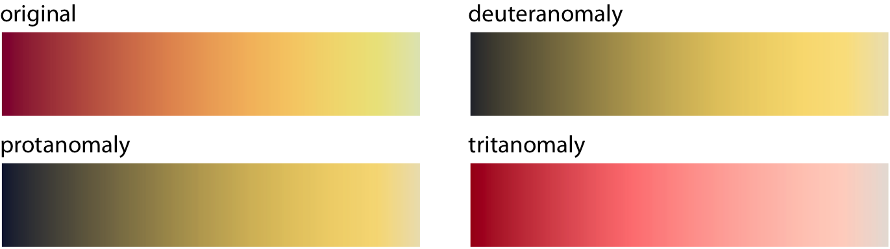
CVD-unfriendly scales
Other scales get muddled.
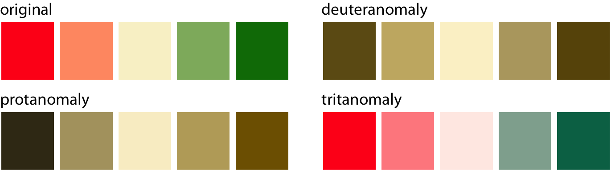
. . .
When in doubt, use a CVD simulator to check figures
Another approach: redundancy
When possible, use ‘redundant coding’ – map the same variable to color and one other aesthetic.
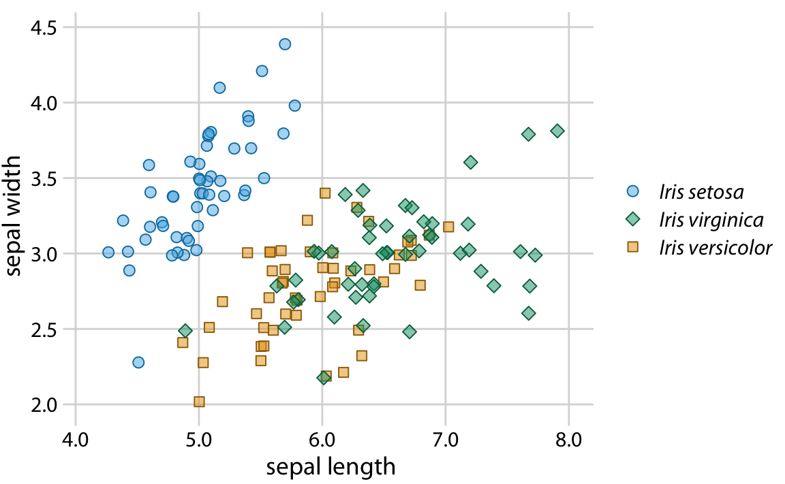
Redundancy
When possible, use ‘redundant coding’ – map the same variable to color and one other aesthetic.
C:\Users\lnbar\AppData\Local\Temp\ipykernel_25140\1928961422.py:20: FutureWarning:
The default value of numeric_only in DataFrameGroupBy.sum is deprecated. In a future version, numeric_only will default to False. Either specify numeric_only or select only columns which should be valid for the function.
C:\Users\lnbar\AppData\Local\Programs\Python\Python311\Lib\site-packages\altair\utils\core.py:317: FutureWarning:
iteritems is deprecated and will be removed in a future version. Use .items instead.
. . .
Redundancy provides a failsafe against any circumstance that might compromise the effectiveness of color:
- printers or black-and-white printing
- projectors, displays, and lighting conditions
- CVD
Faceting
You’ve already made a faceted plot.
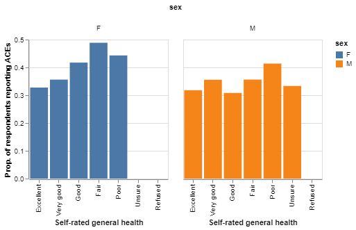
. . .
Notice the redundant use of color!
Faceting
Facets are another way to encode categorical variables when side-by-side comparisons are of interest.
. . .
The most common blunders with faceting are:
- Free axis scales are misleading
- Facet layout isn’t conducive to comparison of interest
Many facets
Often a big panel of scatterplots can be a useful exploratory graphic.

The figure shows a lot:
- Timespan of data 1906-2005
- More observations (movies) in later years
- Higher vote counts in later years
- Higher rating variance among movies with fewer votes
- Long term reversal of voting/rating trend
Use fixed axis scales
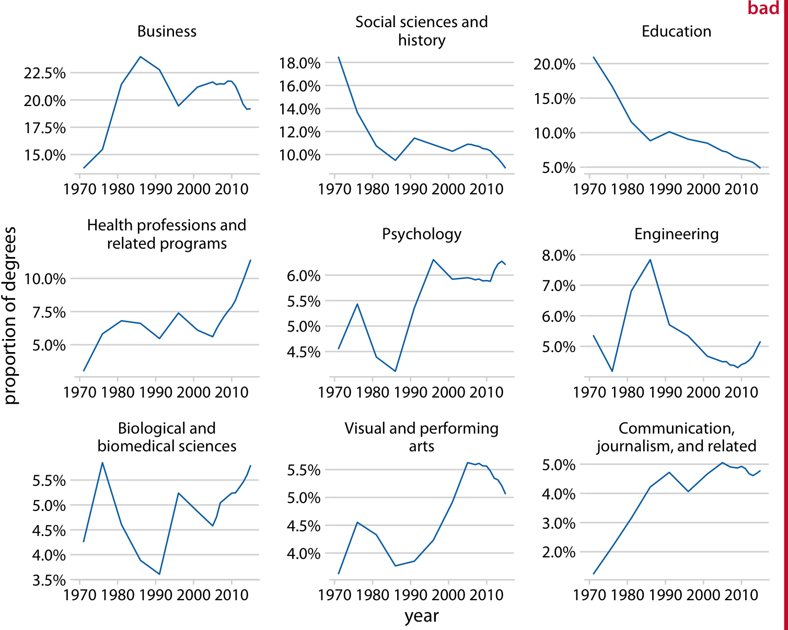
. . .
Suggests, misleadingly, that Education declined by the same amount as social science and history.
Use fixed axis scales
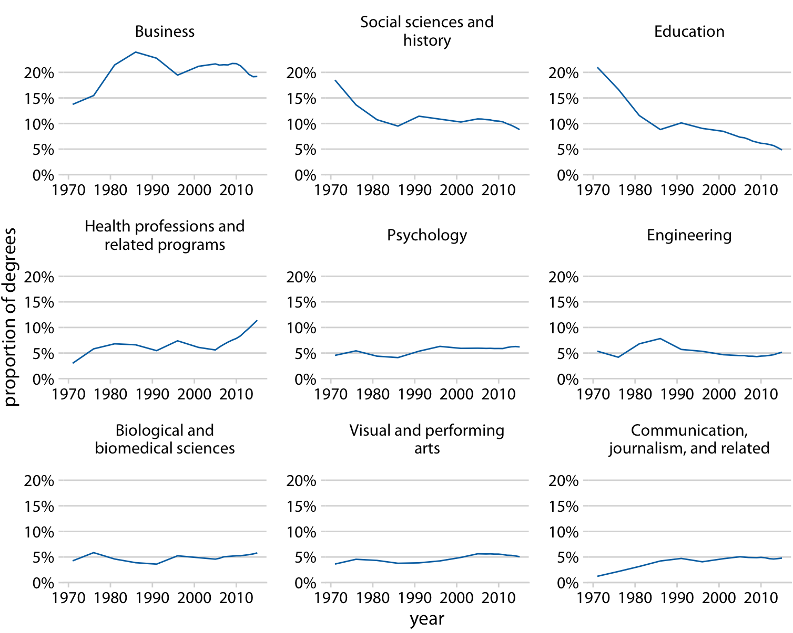
What about this?
One axis is fixed, one is free.
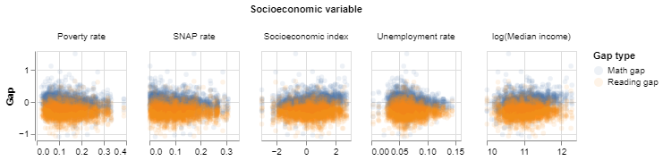
. . .
The variable of interest, Gap, is still comparable across facets. So only one axis needs to be fixed.
. . .
What would it look like if all axis scales were fixed? Would comparisons be easier or harder?
Labels and legends
The most common blunders with regard to labels are:
- Use of dataframe column names as labels
- Obscure or uninterpretable labels
- Too small or too big
. . .
For sizing, it’s important to pay attention to the balance of labels, whitespace, and graphical elements.
Sizing
Usually figure defaults look fine on your IDE but render too small when graphics are exported.

Sizing
These labels are legible, but still too small – they take up a minimum of space in the figure.

Sizing
Use larger labels than you think you’ll need.
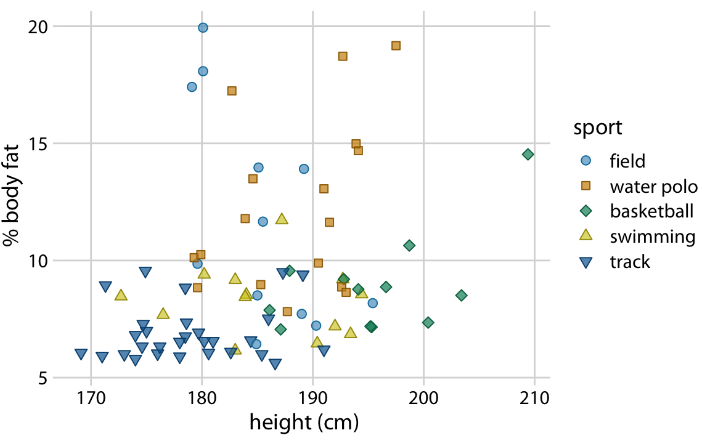
. . .
Note also the mark size is increased a bit.
Sizing
Don’t overdo it.
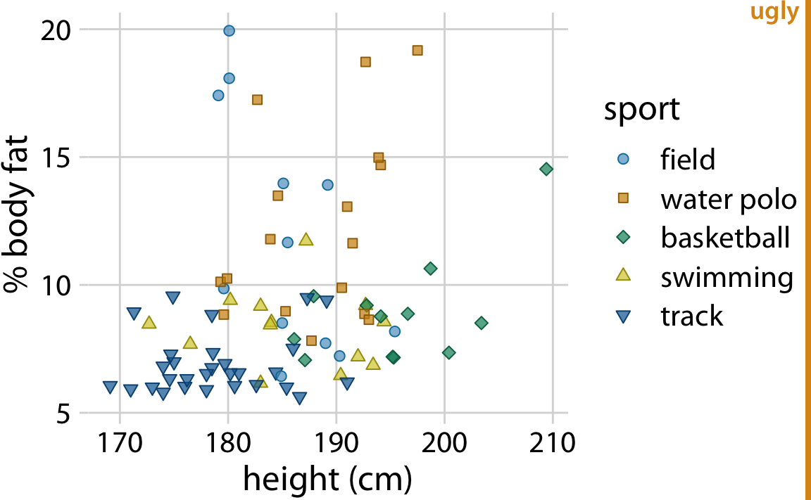
Sizing
If the figure will be reproduced in a scaled-down size, increase all sizes in proportion.
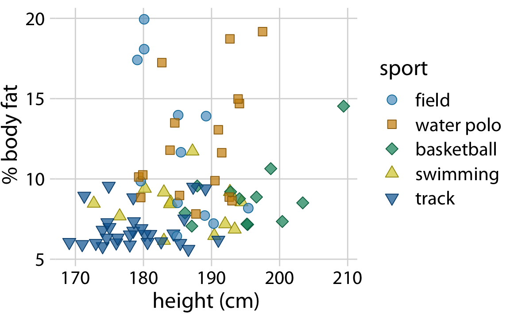
Critiques
Series from NYC Life Expectancy Dropped 4.6 Years in 2020
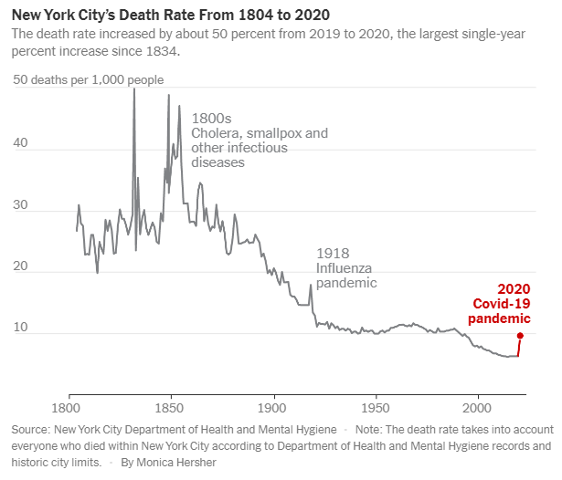
Positive:
- effective use of labels
- effective use of highlighting
- well-proportioned
- clean axes
Negative:
- COVID spike looks minimal, contrary to story?
- the most striking feature of the plot is the time trend and variance stabilization
Critiques
Series from NYC Life Expectancy Dropped 4.6 Years in 2020

Positive:
- same as before
Negative:
- doesn’t convey proportional change in decrease efficiently, but that’s what the caption emphasizes
- ‘overall’ looks like a fourth group
Critiques
Series from NYC Life Expectancy Dropped 4.6 Years in 2020
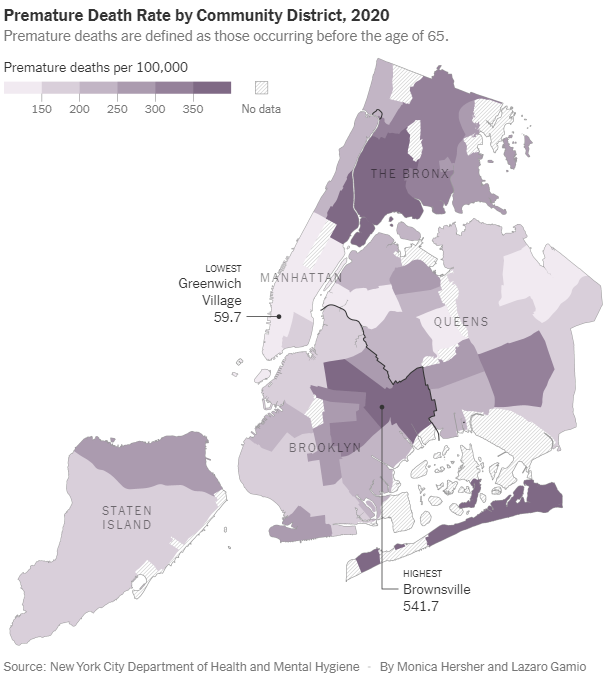
Positive:
- exemplary use of color scale/palette
- line shading shows missing data clearly
- effective use of labels
Negative:
- no clear story
- lacking a baseline comparison
Critiques
Series from NYC Life Expectancy Dropped 4.6 Years in 2020

Positive:
- clear story
Negative:
- awkward/distracting to include time, since no history for COVID
- not the most efficient display of the captioned message
Remark:
- it would be more interesting to see the time courses after 2020
More critiques

Positive:
- clear labels
- unambiguous
Negative:
- bars take up all of the plot here
- many words seem equivalent
Suggestions:
- find an alternative to the bar plot
- consider emphasizing comparisons between word clusters rather than individual words
Tidy graphics?
Graphics should avoid conflating data semantics.
- observational units should be clearly distinguished
- different types of observational units should be shown on different graphics
. . .
In addition, they should avoid conflating observed from inferred quantities.
- aggregated values should be clearly distinguished from individual observations
- predictions, inferred trends, or uncertainty should be shown using a different graphical element than observed data
- unless comparing estimates and observations is the point, make separate graphics
An untidy plot
The starting plot in lab 3 is actually a bad plot because all years are shown together – so observational units (countries) are not clearly distinguished.

A tidy plot
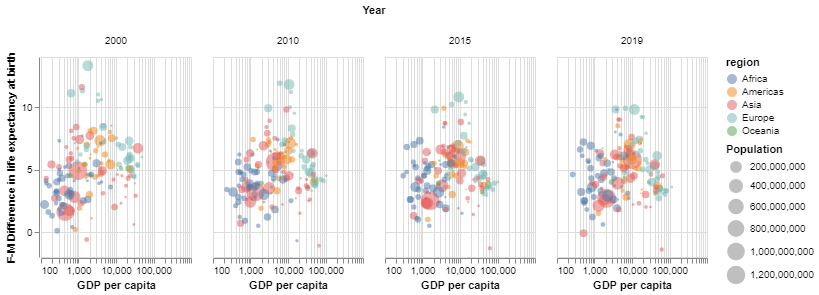
This is tidy, because within facets:
- each bubble represents a country
- any two bubbles represent distinct countries
Exploration or presentation?
In data exploration, it’s more important to generate lots of figures quickly than put a lot of care into details.
- do not need to be scrupulous about labels, sizing, color scales, proportionality, etc.
- do need to attend to axis scales and appropriate choice of graphical display (e.g., boxplots vs. densities)
- should keep plots simple; don’t try to visualize too much information at once
. . .
In developing presentation graphics, details matter.
- consider all visualization principles, especially sizing, color, etc.
- optimize for communication